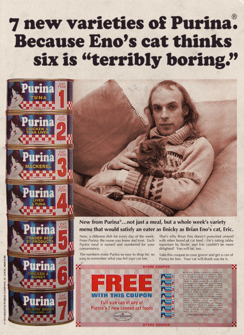

Sunday, June the 16th, 2013
back to: title, date or indexes
Thanks to OutaSpaceman for alerting me to this old magazine advert. Clearly the world o' catfood advertising has been deprived of Brian's presence for far too long. He really ought to get back to doing what he does best.
